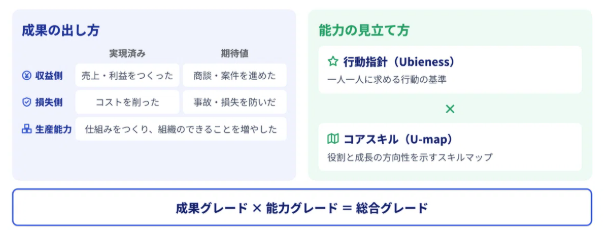
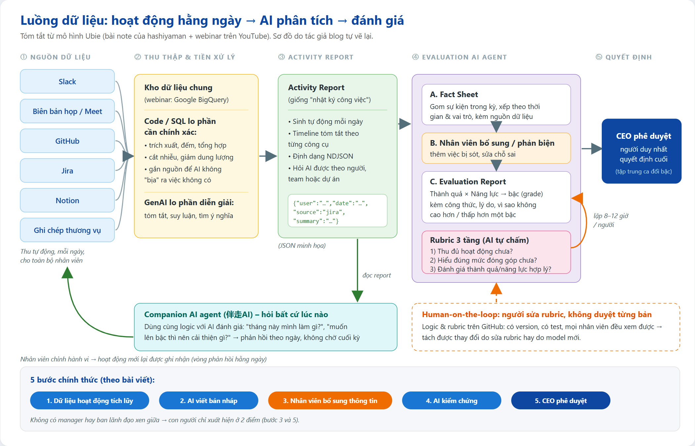
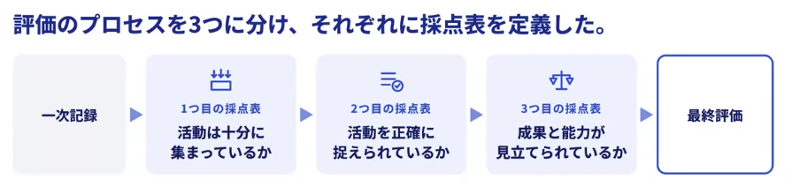
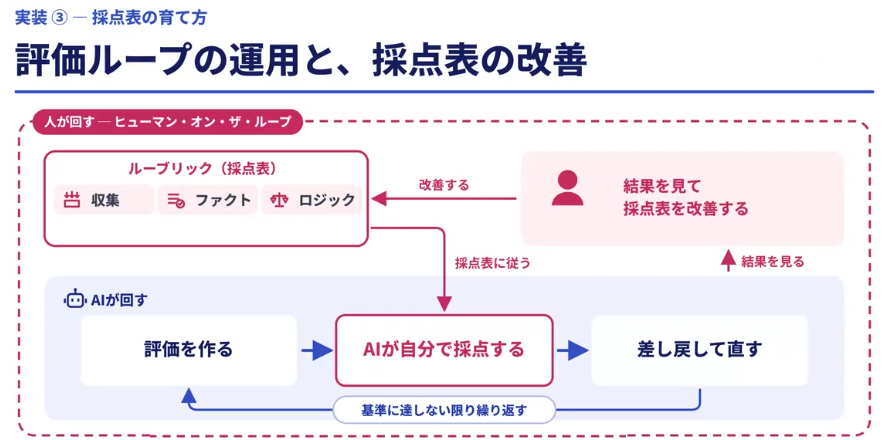
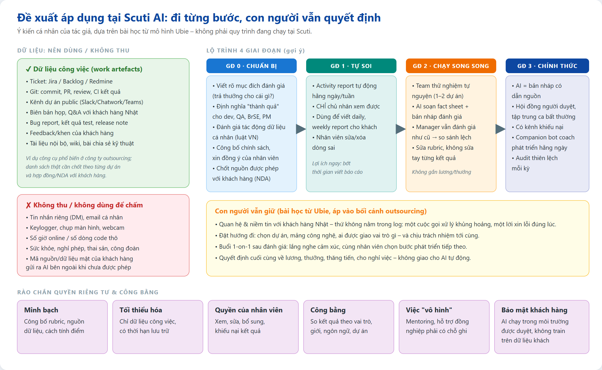

Tóm tắt cách Ubie (Nhật Bản) giao gần như toàn bộ quy trình đánh giá cho AI — dữ liệu được thu thế nào, AI xử lý ra sao, con người còn lại ở đâu — và cách Scuti AI có thể áp dụng một cách an toàn
Bài viết này tổng hợp từ hai nguồn tiếng Nhật, cùng một tác giả:
Bài note nêu 4 mục đích, mục thứ tư là nền móng cho ba mục còn lại:
| Mục đích | Ý chính (diễn giải lại) |
|---|---|
| 1. Để người làm tập trung vào việc | Đánh giá là công cụ để doanh nghiệp tăng trưởng, không phải mục tiêu. Nhân viên ngồi lục lại trí nhớ nửa năm để “viết văn” tự đánh giá, quản lý mất hàng giờ để hiệu chỉnh (calibration) — Ubie muốn trả khoảng thời gian đó về cho công việc thật. |
| 2. Gỡ thiên kiến khỏi quá trình | Đánh giá của con người dựa vào trí nhớ và cảm nhận ngầm của người đánh giá, thường diễn ra trong 1-on-1 hoặc phòng họp kín. AI có thể dùng cùng một thước đo cho tất cả, xem xét hết các dữ kiện và để lại dấu vết lập luận. AI cũng có thiên kiến, nhưng thiên kiến đó dễ nhìn thấy và dễ sửa hơn. |
| 3. Theo kịp cách làm việc mới | Ranh giới nghề đang tan: PdM tự code, kỹ sư tự làm nghiên cứu thị trường, sales tự làm prototype, một người backoffice lo cả nhân sự, tổng vụ, kế toán nhờ AI. Một người quản lý khó hiểu hết mọi chuyên môn để đánh giá; AI thì đọc được nhiều lĩnh vực cùng lúc. |
| 4. Tạo “lực kéo” để mọi hoạt động được ghi lại | AI không đọc được thứ không được ghi. Thay vì ra lệnh “hãy ghi chép”, Ubie tạo trạng thái “việc không có bản ghi thì không được đánh giá” — ghi chép trở thành lợi ích của chính nhân viên. Đồng thời họ đầu tư để thu thập tự động và cho phép nhân viên tự bổ sung, để người làm việc “khó ghi lại” không bị thiệt. |
Quy trình chính thức gồm 5 bước, và giữa các bước không có manager hay thành viên ban điều hành nào:
Con người chỉ xuất hiện ở 2 điểm: chính nhân viên (bổ sung dữ kiện, phản đối) và CEO (phê duyệt). Lý do: giảm công “viết văn” và điều chỉnh, đồng thời triệt tiêu “chính trị” như lấy lòng quản lý hay mặc cả giữa các manager khi calibration. Toàn bộ quá trình, kể cả các lần phản biện, được lưu lại và dùng để cải thiện AI.
Trong phần Q&A của webinar, diễn giả nói CEO không đọc hết mọi người mà tập trung vào các ca có thay đổi bậc so với kỳ trước — mục tiêu là phần CEO phải xem kỹ chỉ còn khoảng 10% trở xuống. Họ cũng thừa nhận khi công ty lên hàng nghìn người, điểm này sẽ là bài toán, nhưng hiện tại không có ý định để AI tự chốt mà không có người nhìn.
Thành quả (成果) được định lượng bằng một khung “dạng thành quả” hai trục: trục dọc là phía doanh thu (tạo doanh thu/lợi nhuận, đẩy thương vụ tiến lên) hay phía tổn thất (cắt chi phí, ngăn sự cố/tổn thất); trục ngang là đã hiện thực hay giá trị kỳ vọng. Bốn ô đó cộng thêm năng lực sản xuất (xây cơ chế giúp tổ chức làm được nhiều hơn) — tổng cộng được tác giả sắp xếp thành 7 loại.
| Vai trò | Thành quả được quy ra số như thế nào (ví dụ trong bài) |
|---|---|
| Sales | Tạo ra doanh thu, lợi nhuận |
| Product | Tăng năng lực sản xuất, tăng xác suất doanh thu tăng |
| Operation / Backoffice | Giảm chi phí, tăng năng suất |
| Security / Branding | Ngăn trước sự cố, tổn thất lẽ ra đã xảy ra |
Trong Q&A, diễn giả giải thích thêm: việc nâng chất lượng được quy ra “tổn thất tương lai đã ngăn được”; việc xây nền tảng được quy ra chênh lệch tốc độ phát triển và chi phí nhân sự khi có/không có nền tảng đó.
Năng lực (能力) dùng để kiểm tra thành quả có lặp lại được không: dựa trên bộ chuẩn hành vi “Ubieness” và bản đồ kỹ năng theo vai trò “U-map”. Hai trục được kết hợp để ra bậc tổng.

Người đánh giá giỏi lắm cũng chỉ feedback được mỗi tuần một lần, thông thường là theo quý hoặc nửa năm. AI không bị giới hạn đó: nhân viên có thể nhận phản hồi bất cứ lúc nào, kể cả mỗi ngày, sửa hành vi ngay, và hành vi mới lại được ghi nhận cho vòng sau. Điểm then chốt: AI đánh giá và AI đồng hành dùng chung một logic, nên làm theo phản hồi hằng ngày cũng chính là đi đúng hướng mà công ty muốn.
Đây là phần cốt lõi. Hệ thống có 3 thành phần: Activity Report, Evaluation AI agent và Companion AI agent (伴走AIエージェント — “AI chạy cùng”).

Một nguyên tắc tôi thấy rất đáng học: không đổ dữ liệu thô vào LLM. Dữ liệu thô vừa nhiễu vừa to. Việc trích xuất, đếm, tổng hợp được làm bằng SQL/code; dữ liệu được cắt gọn để mỗi lần AI chỉ đọc lượng vừa đủ và ở dạng khó “bịa”; chỉ phần suy luận, diễn giải, tóm tắt mới giao cho Generative AI.
Evaluation AI agent dựa trên rubric để tổng hợp các Activity Report trong kỳ thành Fact Sheet — danh sách sự kiện dùng để đánh giá, sắp theo thời gian và theo vai trò, mỗi dữ kiện đều kèm nguồn. Nhân viên có thể bổ sung việc bị thiếu hoặc sửa chỗ sai.
Phần demo Fact Sheet (活動シート) của một PdM trong webinar (khoảng 28:35) cho thấy rất rõ dữ liệu được dùng như thế nào:
Từ Fact Sheet và phần bổ sung của nhân viên, AI áp rubric để ra Evaluation Report: không chỉ kết luận bậc mà cả công thức tính và lý do có thể truy ngược, kèm giải thích vì sao không phải bậc cao hơn một bậc, cũng không phải bậc thấp hơn một bậc. Trong demo (webinar 29:30), bản nháp ra tổng bậc 4 (thành quả bậc 4, năng lực bậc 3), kèm biên độ và phân tích “yếu tố nào làm bậc thay đổi”.
Nhân viên có thể hỏi mở: “Tháng vừa rồi tôi đã làm gì?”, “Muốn phát triển thì nên đi hướng nào?”. Agent đọc Activity Report và trả lời theo chuẩn đánh giá, năng lực và vai trò. Theo diễn giả, các cuộc trò chuyện này cũng được lưu lại, nên phía HR có thể phân tích “dư địa phát triển” của từng người và của cả công ty để điều chỉnh chính sách.

| Tầng | Câu hỏi | Ví dụ |
|---|---|---|
| 1. Thu thập | Đã thu đủ hoạt động chưa? | Sales phải có dữ liệu thương vụ; kỹ sư phải có lịch sử code; vận hành phải có ticket, log trao đổi. |
| 2. Diễn giải | Đã hiểu đúng hoạt động chưa? | Trong cuộc họp nhiều người, ý kiến của ai là khởi điểm của quyết định? Không phải ai nói nhiều nhất là đóng góp nhiều nhất. |
| 3. Đánh giá | Thành quả và năng lực được nhìn nhận hợp lý chưa? | AI có “đoán mò” không, có ước lượng thành quả theo đúng logic không. |
Thứ tự là quan trọng: chưa qua tầng trước thì không xử lý tầng sau. Ban đầu Ubie không có rubric và không biết khi kết quả sai thì lỗi nằm ở thu thập, ở diễn giải hay ở logic — việc chia tầng giúp khoanh vùng lỗi.

Bài note nhắc đến 3 việc nhưng danh sách không xuất hiện trong phần chữ tôi trích được; webinar (khoảng 38:50–40:30) nói rõ cả ba:
Ubie viết ra 3 câu theo thứ tự: (1) chia nhiều đãi ngộ hơn cho người tạo thành quả lớn; (2) đo thành quả bằng số, tính cả giá trị kỳ vọng; (3) đánh giá năng lực vì cần năng lực để lặp lại thành quả. Câu (3) để bù cho những việc mà chỉ đo thành quả sẽ bỏ sót: việc gián tiếp, việc trung–dài hạn, xây nền tảng, ngăn sự cố. Nếu chỉ dừng ở “đánh giá người có thành quả”, AI không biết “thành quả” là gì và rốt cuộc con người lại phải quyết từng ca.
Ubie trả lời câu hỏi “AI đánh giá rồi thì người làm gì?” bằng 2 thứ: kết nối với con người (xây niềm tin, lấy thông tin gốc mà AI không có) và gửi gắm ý chí (cắm cờ việc cần làm, làm chủ tới khi thành hình). Có câu trả lời này trước thì mới chia được việc giữa AI và người. Họ cũng định nghĩa lại vai trò thành 5 kiểu thay vì theo chức danh.
Lãnh đạo xem được tình hình kinh doanh mà không phải hỏi qua người khác; manager nắm tình hình thành viên (có người nói “không còn mất thời gian báo cáo tình hình, giờ họp chỉ bàn nội dung”); nhân viên mới hoặc chuyển dự án tự tìm thông tin dễ hơn. Tác giả coi việc tạo ra “lực kéo” ghi chép này là bài học lớn nhất.
Giả thuyết của tác giả: phần còn lại là đối diện với cảm xúc con người — ngồi cùng người vừa nhận đánh giá của AI để quyết định bước phát triển tiếp theo. Ngược lại, việc thu thập thông tin để đánh giá và viết đánh giá chỉ dựa vào kinh nghiệm cá nhân sẽ dần biến mất; manager chỉ giỏi trong chuyên môn hẹp của mình sẽ bớt giá trị.
Scuti AI là công ty phát triển phần mềm/AI theo mô hình outsourcing tại Việt Nam. Công việc của chúng ta phần lớn đã để lại dấu vết số: ticket, commit, pull request, review, kết quả test, kênh chat dự án, biên bản họp với khách hàng. Nghĩa là nguyên liệu cho Activity Report gần như có sẵn. Khác biệt lớn so với Ubie: dữ liệu nằm trong dự án của khách hàng, nên bảo mật và hợp đồng phải đi trước. Dưới đây là đề xuất cá nhân của tôi, không phải quy trình Scuti đang áp dụng.

| Kỹ thuật của Ubie | Áp dụng vào Scuti |
|---|---|
| Activity Report hằng ngày | Tự tổng hợp từ Jira/Backlog/Redmine, Git và kênh dự án thành bản nháp daily stand-up và weekly report gửi khách hàng. Lợi ích ngay cả khi chưa đụng tới đánh giá: bớt thời gian viết báo cáo, PM/BrSE nắm tình hình nhanh hơn. |
| Fact Sheet có nguồn, nhân viên tự sửa | Thay phần “tự viết bản thành tích” khi review định kỳ: AI soạn danh sách việc đã làm kèm link ticket/PR, nhân viên bổ sung những việc “vô hình” (mentoring, hỗ trợ dự án khác, xử lý sự cố đêm, phỏng vấn tuyển dụng, viết bài chia sẻ kỹ thuật). |
| Khung thành quả (doanh thu / tổn thất, hiện thực / kỳ vọng, năng lực sản xuất) | Định nghĩa thành quả cho từng vai trò outsourcing: Dev — tính năng giao đúng hạn, giảm bug lọt sang khách; QA — lỗi phát hiện trước release (tổn thất đã ngăn); BrSE/PM — giữ chân khách, mở rộng hợp đồng, giảm change request phát sinh; người làm nền tảng — template, CI/CD, thư viện nội bộ giúp các dự án khác nhanh hơn. |
| Năng lực theo chuẩn hành vi + skill map | Gắn với khung năng lực/career path hiện có (nếu có); thêm các kỹ năng đặc thù: giao tiếp với khách hàng, tiếng Nhật/Anh, ước lượng effort, sử dụng AI trong công việc. |
| Companion agent | Bot nội bộ giúp nhân viên tự hỏi “quý này mình đã đóng góp gì, nên cải thiện gì để lên level?” trước buổi 1-on-1 — manager dùng thời gian 1-on-1 để nói chuyện thật thay vì hỏi “dạo này em làm gì”. |
| Rubric 3 tầng + Human-on-the-loop | Bộ phận HR + một nhóm kỹ sư nhỏ quản lý rubric như code (Git, review, test); khi kết quả lệch, sửa rubric thay vì sửa tay từng người. |
| Dữ liệu phục vụ ngoài đánh giá | Onboarding nhân viên mới vào dự án, phân bổ nguồn lực (ai đang quá tải), phát hiện sớm dự án có rủi ro. |
Viết mục đích trong 3 câu (giống Ubie): đánh giá để làm gì, đo thành quả thế nào, vì sao cần đo năng lực. Công bố cho team thử nghiệm.
Chọn 1 dự án tự nguyện có sự đồng ý của thành viên và của khách hàng (nếu dữ liệu dự án liên quan). Chốt danh sách nguồn: ticket + Git + kênh dự án public.
Xuất dữ liệu bằng script (API của Jira/Backlog, GitHub/GitLab) thành NDJSON theo người – ngày; lọc bằng code trước, chỉ đưa phần tóm tắt cho LLM.
Sinh Activity Report hằng tuần chỉ cho chủ nhân xem, dùng để viết weekly report. Thu feedback: thiếu gì, sai gì.
Cuối quý, chạy song song: AI soạn Fact Sheet + bản nháp, manager vẫn đánh giá như cũ; so độ lệch để sửa rubric. Chưa gắn với lương thưởng.
Ví dụ prompt cho bước tạo Activity Report (sau khi code đã lọc dữ liệu):
Toàn bộ quá trình đọc nguồn được quay lại trong một video liền mạch: mở bài note → cuộn các phần chính → mở video YouTube, mô tả, bảng chép lời, tua tới các đoạn demo → mở 2 sơ đồ → kết thúc bằng blog này được cuộn từ đầu đến cuối.
Video gốc của webinar:
Điều đáng học nhất từ Ubie không phải là “AI chấm điểm nhân viên”, mà là cách họ biến hoạt động hằng ngày thành dữ kiện có nguồn, để AI làm phần thu thập – tổng hợp – lập luận, còn con người tập trung vào việc đặt tiêu chí, sửa rubric và đối thoại với nhân viên. Với Scuti AI, bước đầu hợp lý là Activity Report phục vụ chính nhân viên (bớt viết báo cáo), sau đó mới tới Fact Sheet cho kỳ review, và luôn giữ quyết định cuối cùng ở con người, với quyền riêng tư và bảo mật khách hàng làm điều kiện tiên quyết.